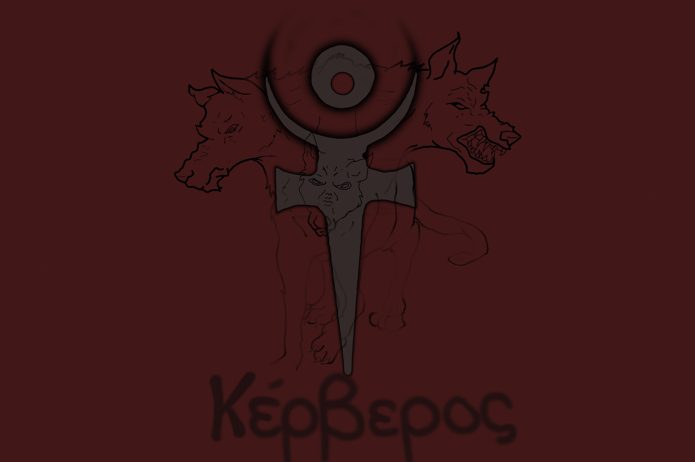
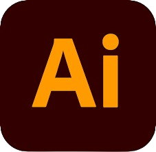
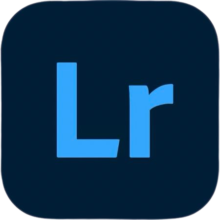
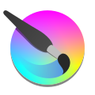

Kristoff Salvador Carvajal Cortez
Sobre Mí
Mi nombre es Kristoff Carvajal, un estudiante de Diseño Gráfico actualmente cursando 8° Tetramestre en la universidad lux me considereo una persona creativa la cual se puede adaptar a la mayoria de los proyectos que me han dado como el realizar posters o pastas frontales para libros para estos mismo utilice los programas mencionados en competencias
Trabajos Más Destacados

Proyecto 1: [Breve descripción, contexto, proceso y propósito].

Proyecto 2: [Breve descripción, contexto, proceso y propósito].
Otros Trabajos
-
 Ilustración digital de dos personajes de anime conocidos
Ilustración digital de dos personajes de anime conocidos -

Ilustración digital de cerbero con el simbolo de hades como representacion
Herramientas y Competencias
Photoshop
Nivel Básico - Intermedio

Illustrator
Nivel Básico - Intermedio
InDesign
Nivel Intermedio

Lightroom
Nivel Básico - Intermedio

Krita
Nivel Básico - Intermedio
Contacto
Email: salvador.carvajal@hotmail.com
Teléfono: 8129200544